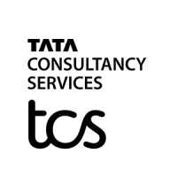

-

Research Scholar
Indian Institute of Technology, KharagpurNov, 2023 to Dec, 2024
Responsibilities ...
- Assisting Professors with operations work regarding courses being taught by them at the institute.
-
 Senior Faculty (TCS ILP)
Tata Consultancy Services Ltd.Nov, 2023 to Dec, 2024
Responsibilities ...
- Engaging with Stakeholders especially Business Skills Team, HR team and Delievery team and working with them for the smooth delivery of ILP Training Program.
- Managed a team of 5-7 technical faculties along with the Faculty lead and worked upon the distribution of responsibilities among the team members.
- Resolving trainee associates issues with respect to technical training and also helping them with their day to day training workflow.
- Resolving critical issues with respect to Technical Team as well as trainee associates and providing resolutions so that the issues can be worked upon.
- Working in-sync with the organization's management and conveying information from them to the team and as well as vice versa whenever required.
- Contributed code to different kind of process innovation softwares as part of TD initiatives.
-
Assistant Faculty (TCS ILP)
Tata Consultancy Services Ltd.Sep, 2022 to Nov, 2023
Responsibilities ...
- Incharge of the training and development of engineering freshers (BTech, MTech, MCA) with the industry relevant skills, tools and technologies, so that they can be deployed to real-time projects.
- Responsible for the training of the associates on Python, Core Java, JDBC, JSP, UI (Html, CSS and JS), SQL, Unix commands, Bash Programming, and Python Web frameworks like Flask and Flask Microservices.
- Responsibilities revolve around Learning Group workflow execution, conducting sessions on various technical topics ranging from programming basics to advanced web and microservices.
- LG workflow execution also includes preparation of reports on the performance of the associates in various assessments, which included advance programming as well as web. Closing of training offerings as well as also uploading the marks in the learning portal were a part of the workflow.
- Ensuring the smooth execution of the agile sprint-based case study learning by associates and supervised the implementation of full stack developed projects worked upon by the trainees, which demonstrated their learning progress in the technical training.
- Contributed various learning materials and artifacts for the purpose of smooth delivery of the training programs by other faculties across different locations.
- Conducting sessions as a part of the Continuous Learning Program (CLP) for the experienced associates as a part of organizational transformational initiatives as well as Full Stack Development (FSD) Training on technologies such as Core Java, JDBC, JSP and Servlets.
- Helped the Regional Talent Development team with their various learning and talent development initiatives, on supporting the learning culture among TCS associates.
- Organizing sessions for freshers on advanced topics like Green Computing, Devops, Agile and Performance coding and introducing to them the design principles of Enterprise application development.
-
Graduate Trainee (TCS Ignite)
Tata Consultancy Services Ltd.May, 2022 to Sep, 2022
Responsibilities...
- Got trained on various industry relevant technologies pertaining to Java, Python, Artificial Intelligence, Machine Learning and UI (Html, CSS, JS and React Basics).
- Also got trained on Agile Methodologies and various testing and load balancing tools like Apache JMeter, SonarQube, Jira etc.
- Worked on a project on Audio analytics using Machine Learning technologies as a part of the Incubation Bootcamp which was a part of the Ignite training curriculum.
- Managed a group of 5 team members while working on the successful execution of the project.